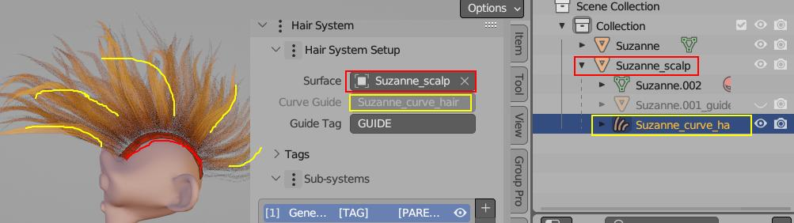

Overview¶
Art by Ellinor Morén
Hair Tool uses a series of geometry-nodes based modifiers, called Hair Systems. Few available Hair Systems types include:
- Strand Generator - to generate hair strands from base mesh, guided by hair curves
- Strand Filter - to modify existing strands
- Strand From Grid Surface - to generate strands from guide grid mesh surface
General structure of Hair Tool modifier stacks looks like this:
- A Setup section where guide curve and source mesh are assigned
- One or more Hair (sub)systems, each made from Deformers
- A Hair Profile where hair curves are meshed, UVs and materials are assigned and where you can sample UV/Color attributes from base mesh.
On top of that, Hair Tool provides a set of tools for:
- manual Modeling,
- Selection Groups - for storing and reusing selection sets,
- hair simplification,
- Hair Animation,
- generating UVs,
- baking textures
and more.
 You can attach a Hair System to either a mesh object (like a scalp) or a guide curve
You can attach a Hair System to either a mesh object (like a scalp) or a guide curve
Note: Shell Hair and Short Hair are not using Hair System workflow
Setup Section¶
This panel shows you two important things:
- Guide Curve: This is like a roadmap for child hair. It's a greyed-out if your Hair System is assigned to curve.
- Source Mesh: This is where the hair starts growing from, usually the scalp. It's also greyed-out if your hair is already connected to it.

In Image above Hair System is attached to guide curve Suzanne_curve_hair (yellow), and strands are spawned from Source Surface: Suzanne_Scalp mesh
Setup modifier allows to move your hair from one object to another, like from a curve to a 3D model, using the Transfer Hair System button.
When you assign Hair System to an object, this panel will automatically be filled with the right information.
Note: You don't always need to use a setup modifier. For example, you don't need it when drawing hair with the Hair Drawing tool.
Hair Sub-Systems¶
Sub-Systems are responsible for hair curves generation and modification by Deformers. To add Hair Sub-System click [+] icon in Sub-System tab
 Sub-System: Users Count | Name | Tag | Parent Tag | Visibility
Sub-System: Users Count | Name | Tag | Parent Tag | Visibility
 On image above we have Two Hair Sub-Systems named:
On image above we have Two Hair Sub-Systems named: Parent, Child. You can see Child system is made from: Strand Generator, Noise, Clump, etc. deformers. Whole system is guided by: HairCurve guide - second input at very top
Currently, there are three types of sub-systems:
- Strands Generator - it will generate strands from mesh (usually scalp) - mesh is required and has to be assigned in Setup Section (usually done automatically, by Hair Tool)
- Strands Filter - it is not generating strands, but it can affect strands generated by other sub-systems placed above in stack (you can affect only selected strand by using 'Tag' field)
- Strands From Grid Surface - it will generate strands from guide grid surface - grid has to have one border loop marked as 'sharp' (Ctrl+E -> Mark Sharp) - this will tell addon where the hair roots should be placed
First Deformer cannot be removed - and its type is set based in Hair System type you added
List of available deformers can be found here.
Note: Similarly to Setup modifier, Hair Sub-Systems are optional - for example it is not used when drawing hair curves with Hair Drawing tool. But you can add them at any time to any curve by clicking [+] icon in Sub-System tab.
Hair Profile¶
Hair Profile is last modifier in Hair System stack. It is place where, not only hair profile is attached to curves, but UVs and Material is assigned too
Hair Tool will automatically add default UVs and Hair Material to hair system.

Note: Do not assign Material to hair object in Materials Tab - this won't work. Use Hair Profile panel instead.
 Hair Profile Panel with Curly Profile preset
Hair Profile Panel with Curly Profile preset
To add or edit curve profile, use Ctrl+Shift+H pie menu -> click 'Add (Update) Profile'.